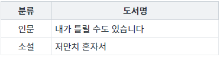
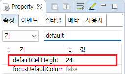

GridView의 속성 'defaultCellHeight'의 예제입니다. 속성 'defaultCellHeight'은 셀의 기본 높이를 'px'단위로 설정하는 기능을 제공합니다.
셀의 기본 높이 설정
STEP 1. 실행된 결과를 확인합니다.
각 영역에 출력된 GridView의 셀의 높이를 확인합니다.
그림 1.브라우저(Chrome) 실행 예시 - 셀의 기본 높이가 '24px'로 지정된 GridView

그림 2.브라우저(Chrome) 실행 예시 - 셀의 기본 높이가 '40px'로 지정된 GridView
STEP1. GridView의 속성을 정의합니다.
[필수] defaultCellHeight="숫자형 데이터"
숫자형 데이터로 지정한 값이 'px'단위로 적용됩니다.
예시 1) 셀의 기본 높이를 24px로 지정
defaultCellHeight="24"
그림 3.웹스퀘어5 SP5 스튜디오의 DataList Property View(속성창) 예시

소스 코드
<w2:gridView defaultCellHeight="24"> <!-- 중략 --> </w2:gridView>
defaultCellHeight
[웹스퀘어5 SP5 개발 가이드] GridView
링크 : https://docs1.inswave.com/sp5_user_guide/86bdcf48029b958b